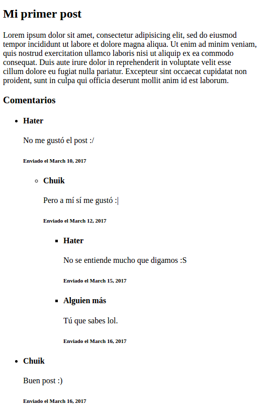

Inclusión de templates en Django
Este post fue migrado de mi antiguo blog. El código fue modificado para ajustarse a versiones más recientes de Django.
Hace unos días empecé a sentir que el código en uno de los componentes principales de mi sistema se estaba saliendo de control. Tengo un modelo al que hacen referencia muchos otros, así que hice una página donde se pudiera ver toda la información relacionada a él. De pronto caí en cuenta de que el template estaba creciendo muchísimo más allá de lo que me habría gustado. Estaba dedicando mucho tiempo a editar cosas que no eran de mi entidad principal, y encontrar dónde estaban esas cosas era una tarea colosal. La solución que encontré fue utilizar el método para incluir templates en Django, y así logré ordenar todo de nuevo. En vista de lo aprendido, no pude sino compartir mi mecánica. Así que vamos a verlo.
Primero vamos a ver cómo se estructura el proyecto de prueba. Para ello vamos a crear una entidad principal, que tenga otras dos relaciones:
# models.py
from django.db import models
class Post(models.Model):
titulo = models.CharField(max_length=20)
cuerpo = models.TextField()
class Comentario(models.Model):
post = models.ForeignKey(Post, related_name='comentarios', on_delete=models.PROTECT)
fecha = models.DateField()
usuario = models.CharField(max_length=50)
mensaje = models.TextField()
Voy a hacer una vista simple para mostrar un objeto de la entidad principal.
# views.py
from .models import Post
from django.views.generic import DetailView
class PostView(DetailView):
model = Post
template_name = 'post_detail.html'
Ahora lo importante, el template. Al final del post muestro los comentarios que se han hecho para ese post en particular. Es un recorrido simple utilizando el related_name del modelo.
<article>
<h1>{{ post.titulo }}</h1>
{{ post.cuerpo|linebreaks }}
<h3>Comentarios</h3>
{% for comentario in post.comentarios.all %}
<h4>{{ comentario.usuario }}</h4>
{{ comentario.mensaje|linebreaks }}
<h6>Enviado el {{ comentario.fecha }}</h6>
<hr />
{% endfor %}
</article>
Hast ahí todo bien. Pero ahora imaginemos que las clases para el comentario fueran mucho más elaboradas. Cosas como el link al perfil del usuario, mostrar su foto de perfil, permitir algo de markdown o texto enriquecido en los comentarios; todo sería un añadido bastante grande al template del post. Además, ¿qué pasaría luego si quisiera utilizar el mismo formato para comentarios en otro lugar que no fueran un post? Tendría que copiar y pegar esta parte de código en cada uno de esos templates; sin mencionar que al hacer un cambio tendría que remplazar todos. Para solucionarlo, utilizaré entonces la inclusión de templates de Django.
Para ello voy a crear un nuevo template, donde encapsularé el comentario. Veamos el contenido de coment_template.html.
<h4>{{ comentario.usuario }}</h4>
{{ comentario.mensaje|linebreaks }}
<h6>Enviado el {{ comentario.fecha }}</h6>
<hr />
Ahora, en el template principal del post, voy a incluir el nuevo template en lugar de escribir todo el código.
<h3>Comentarios</h3>
{% for comentario in post.comentarios.all %}
{% include "coment_template.html" with comentario=comentario %}
{% endfor %}
La página generada es exactamente igual, pero ahora puedo permitirme hacer todas las modificaciones que desee en el template del comentario y reutilizarlo cuando quiera.
Ahora puedo permitirme tener comentarios anidados, para permitir a los usuarios responderse entre sí sin necesidad de hacer demasiados cambios.
Vamos a modificar el modelo:
class Comentario(models.Model):
post = models.ForeignKey(Post, related_name='comentarios')
padre = models.ForeignKey("self", related_name='hijos', null=True)
fecha = models.DateField()
usuario = models.CharField(max_length=50)
mensaje = models.TextField()
Y ahora el template del comentario:
<h4>{{ comentario.usuario }}</h4>
{{ comentario.mensaje|linebreaks }}
<h6>Enviado el {{ comentario.fecha }}</h6>
{% if comentario.hijos.count > 0 %}
<ul>
{% for hijo in comentario.hijos.all %}
<li>
{% include "coment_template.html" with comentario=hijo %}
</li>
{% endfor %}
</ul>
{% endif %}
Y ahora puedo dejar los visitantes de mi blog se maten unos a otros en mis comentarios :)
